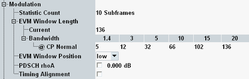

The following parameters configure the modulation measurement settings. They are contained in section "Measurement Control".

Defines the number of measurement intervals per measurement cycle (statistics cycle, single-shot measurement). This value is also relevant for continuous measurements, because the averaging procedures depend on the statistic count.
For modulation measurements, the measurement interval is completed when the R&S CMW has measured a full subframe, containing 14 OFDM symbols. The measurement always extends over the whole subcarrier range.
The measurement provides independent statistic counts for different results. In single-shot mode, a measurement with a completed statistic count is stopped, even if another measurement with an incomplete statistic count is still running.
Remote command:Length of the EVM window, defined as number of samples. The standard (3GPP TS 36.104, annex E) specifies the window length as a function of the bandwidth and the cyclic prefix. The R&S CMW uses the "Current" value. This value is linked to the value in the table, corresponding to the current cyclic prefix and bandwidth settings.
The window length defines the two sets of "l / h" modulation quantities in the result tables; see "Calculation of Modulation Results".
The minimum value of 1 FFT symbol actually corresponds to a window of zero length so that EVMh = EVMl.
Remote command:Selects which results are evaluated for the I/Q diagram - the results calculated at the low extremities or at the high extremities of the EVM window; see also "Calculation of Modulation Results".
Remote command:ρA (rhoA) defines the power level of a PDSCH resource element relative to the RS EPRE. It applies if no RS resource elements are transmitted simultaneously on other subcarriers.
If the checkbox is disabled, the ρA is determined by the selected "E-UTRA Test Model", see "E-UTRA Test Model".
If the checkbox is enabled, the configured ρA value overrides the value of the selected "E-UTRA Test Model".
Remote command:Enables or disables the measurement of the additional RF input for the scenario "Two RF In".
If the checkbox is disabled, only the measured RF input is evaluated, not the additional RF input.
Remote command: